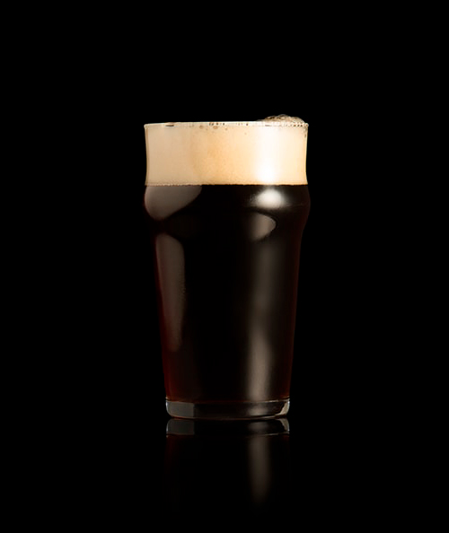
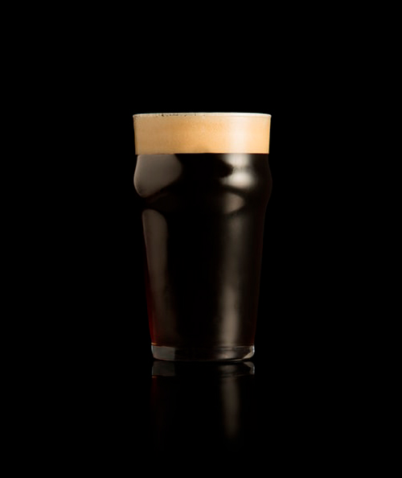
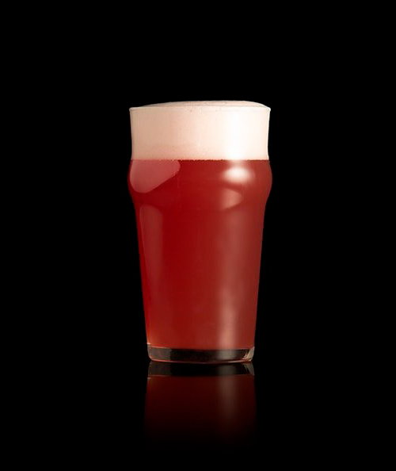
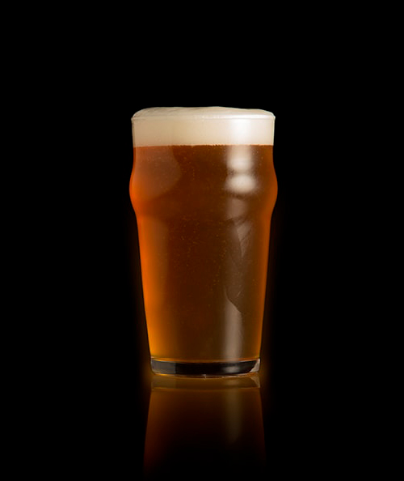
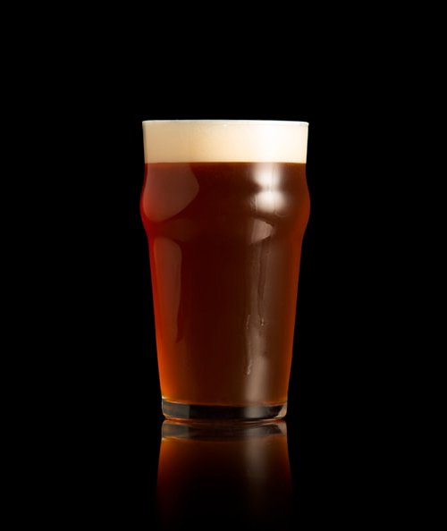

Cerveza Barley: Del estilo Ale muy fuerte y complejo, con un
contenido de alcohol de 8% a 12% o más.

Cerveza Black Ipa: Es un estilo híbrido que combina la apariencia
oscura y el sutil trasfondo de una malta tostada con el potente amargor, sabor y aroma a lúpulo.

Cerveza Bock: Estilo tradicional alemán de baja fermentación
(lager), famoso por su cuerpo robusto, su graduación alcohólica elevada (usualmente entre 6% y
7,5%).

Cerveza Strawberry: La frutal más popular del mundo, caracterizada
por su balance entre el dulzor natural de la fruta y notas sutilmente ácidas o refrescantes.

Cerveza Honey: Ofrece un color dorado intenso, cuerpo moderado, bajo
amargor y un aroma floral característico.

Cerveza IPA: De alta fermentación que destaca por su intenso
amargor, aroma frutal o cítrico y mayor graduación alcohólica.